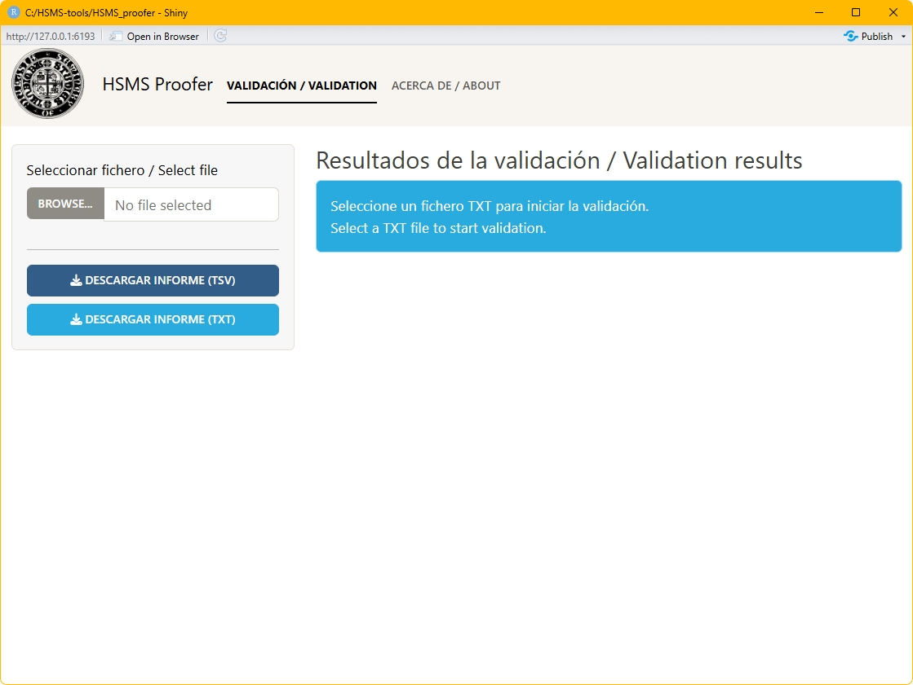

Manual
HSMS proofer (1.0)
(última actualización 2026-07-05)
José Manuel Fradejas Rueda
Francisco Gago Jover

Hispanic Seminary
of Medieval Studies
Manual HSMS proofer © 2026
is licensed under CC
BY-NC-SA 4.0